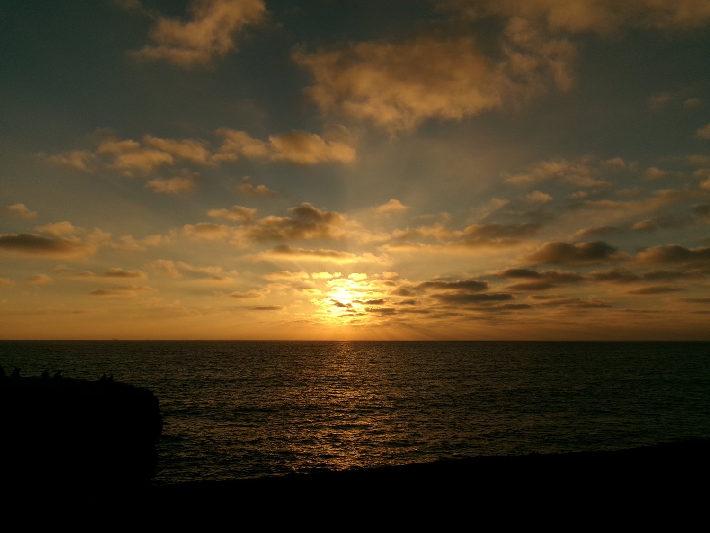
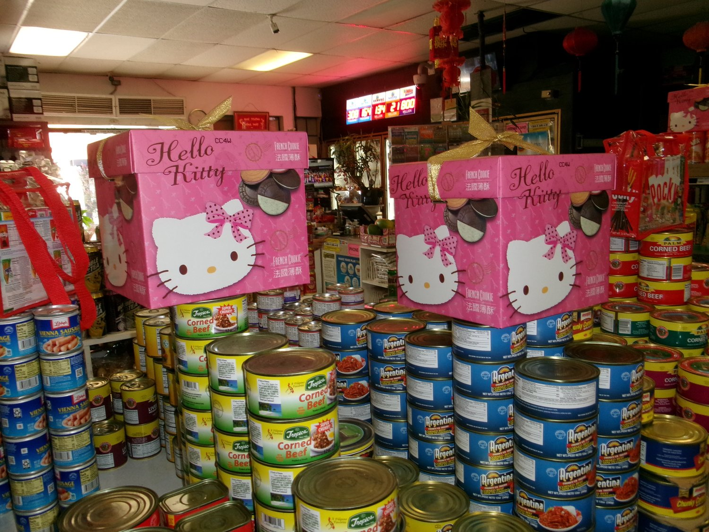
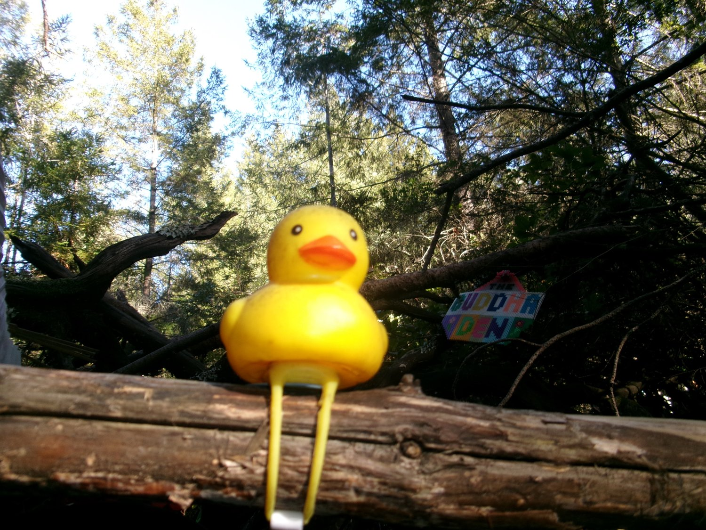
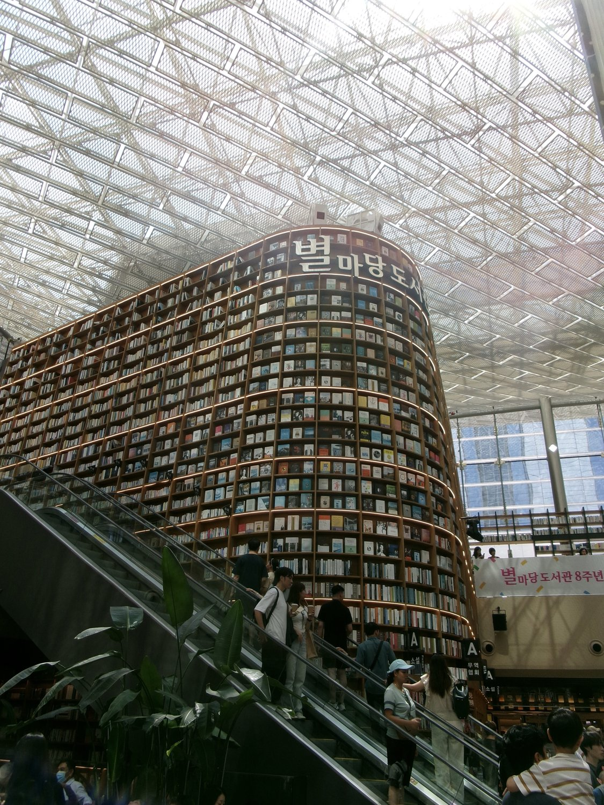
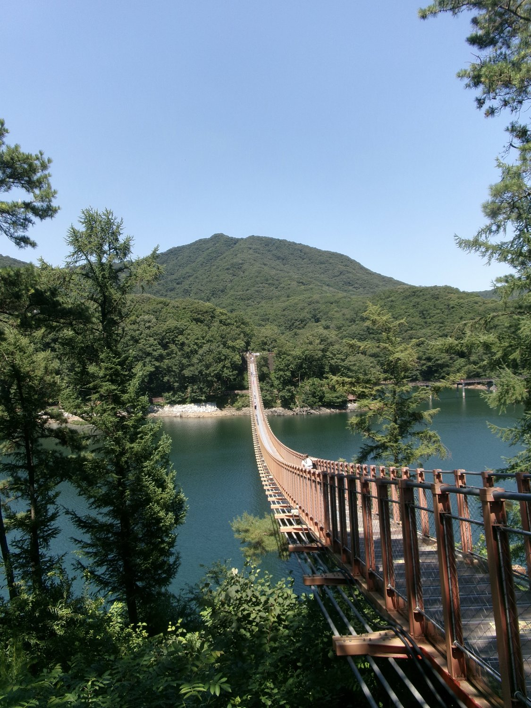
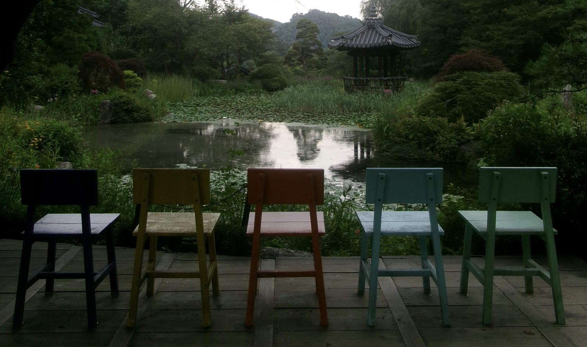
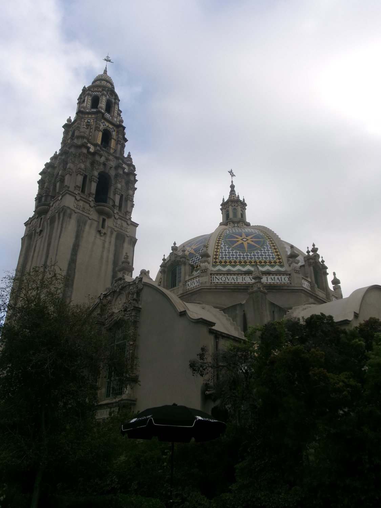
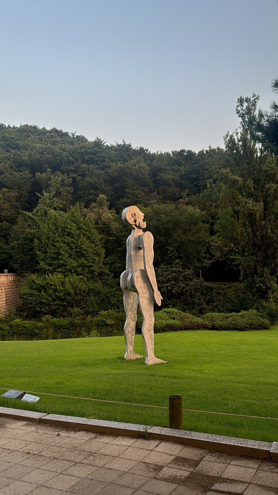
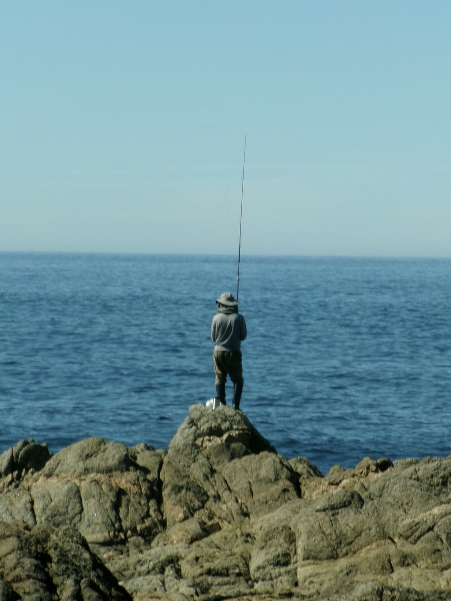
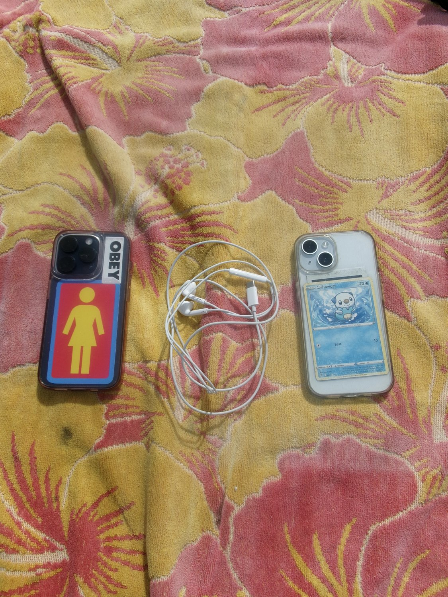

Frame 01 Flip →The Story
Sunset @ Sunset Cliffs
The very first photo I took on my camera. I was with my 3 best friends from home having a picnic at our favorite spot, Sunset Cliffs. It was the first time we had seen each other since our first years at college — there was so much warmth and laughter.

Frame 02 Flip →The Story
An Asian Grocery Store
A grocery store in National City. I was overwhelmed with a feeling of nostalgia as soon as I walked through the door.

Frame 03 Flip →The Story
Rubber Duck
A little rubber duck I saw on a hike in Santa Cruz. It called my name, so I made it my muse.

Frame 04 Flip →The Story
Starfield Library
This was one of my “must see” spots when I visited Korea. It definitely didn’t disappoint. I brought my copy of The Little Prince and did a quick read before taking the train back to my apartment.
Frame 05
Flip →
The Story
The Palace Guard
Gyeongbokgung Palace was truly a surreal experience. I took this photo at the “Changing of the Guards Ceremony” and I can still feel the drum beat pounding in my ear.

Frame 06 Flip →The Story
Bridge with Kimsoo
Every Friday during my internship at Simone, I’d be sent on K-Culture excursions. The one photographed here wouldn’t have been possible without our fantastic guide, Kimsoo. He picked us up at 7AM and we didn’t get back until 9PM. He recommended this bridge, and it was an incredible sight.
 Frame 07
Flip →
Frame 07
Flip →
The Story
Sea Temple
A little weekend trip to one of my favorite spots in South Korea, Sokcho. Beautiful beaches, mountains, and seafood. I was surrounded by incredible friends who weren’t afraid of a little cliffside.

Frame 08 Flip →The Story
Botanical Garden
I truly was just moved by these 5 empty chairs. All differently colored, but facing the same sights. I sat down in the middle chair, and imagined my 4 best friends next to me.

Frame 09 Flip →The Story
Balboa Park
Growing up, my parents would take me to Free Museum Tuesdays at Balboa Park. I continue to revisit whenever I’m home because I have so many fond memories. The architecture is always breathtaking any direction you look.

Frame 10 Flip →The Story
Singing Man
For a little bit of context — before I had visited Korea, I had just watched the movie Past Lives with one of my best friends. I decided to go on a hike after getting off at a random station on Line 4. It was a beautiful path leading to a museum, and at that museum the statues from Past Lives were being exhibited.

Frame 11 Flip →The Story
Fisherman
On a hike for two of my friends’ birthdays, we stumbled upon these fishermen in the distance. As we watched from the cliffs I was mesmerized by the sight. I have such fond memories of that day.

Frame 12 Flip →The Story
2 Phones
For Spring Break 2026, I road-tripped from Maryland to Stanford. My last stop before campus was Santa Cruz, to visit my best friend. This is a photo of both of our phones and my wired earbuds at the beach.